Draft for review. This page is marked noindex and is not linked as a public article until Devin approves it.
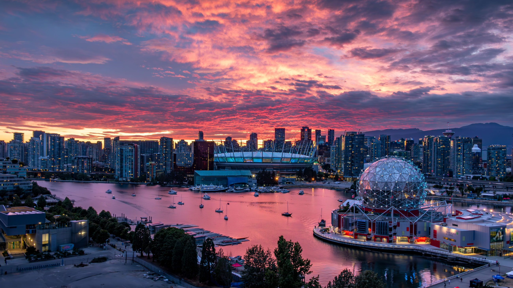
Photo: Adi K / Pexels
Relocation guide · October 2026 Axford Real Estate · Port Moody
Moving to Greater Vancouver
Rents, benchmark home prices, SkyTrain, schools, MSP and the first 30 days — written for people who are actually moving here, with every figure dated and every source named.
Devin DesaulniersReal Estate Associate, Axford Real Estate · 28 years in Greater Vancouver
Figures checked 11 October 2026 · they change
From someone who lives here
How to use this guide
I’m Devin Desaulniers, a Real Estate Associate with Axford Real Estate. I’ve lived in Greater Vancouver for 28 years, I’ve been licensed since 2020, and I work on Clarke Street in Port Moody. This is the version I wish people had before they wired a deposit from another province.
Greater Vancouver is not one city. It is a string of municipalities along the inlet and the Fraser River, joined by bridges, a tunnel, and TransLink. The number that matters is the one attached to your commute and your budget, not a regional average.
Two rent figures show up in every conversation, and they measure different things. Asking rents are what vacant listings are advertised for. CMHC average rents include homes people already live in, so they are often lower. Budget for the asking rent if you are arriving now.
These figures move. Rentals.ca’s September 2026 asking rents were published 7 October 2026. Greater Vancouver REALTORS® benchmark prices are for September 2026, published 2 October 2026. CMHC’s bedroom-type averages are from the October 2025 Rental Market Survey. Property transfer tax rules below were checked on the Province’s site on 11 October 2026. Confirm anything you are about to sign or pay.
If the Tri-Cities — Coquitlam, Port Coquitlam, Port Moody, plus the villages of Anmore and Belcarra — are on your list, read the Tri-Cities edition next. That is where I work, and where I play soccer.
September 2026, in four numbers
The region at a glance
$1,075,900
Composite benchmark, Greater Vancouver. Down 5.5% in a year (GVR MLS® HPI).
$2,380
Asking rent, Vancouver 1-bedroom. Down 4.8% year over year (Rentals.ca).
1,717
Homes sold in September, 8.4% fewer than a year earlier and 25% under the 10-year average.
$2.85
Adult 1-zone fare on Compass stored value. 1-zone everywhere after 6:30 p.m. and on weekends.
Benchmark by home type, Greater Vancouver, September 2026
Detached
$1,784,700−7.3% year over year
Townhouse
$1,016,700−4.7% year over year
Apartment
$682,500−6.2% year over year
A benchmark is a typical home, not a price tag. The MLS® Home Price Index tracks a “typical” home in each category and area, so it moves more smoothly than averages. Each city also has its own hall, garbage calendar and school district; SkyTrain ties them together.
Asking rent vs. CMHC average. Asking rents are what vacant listings want this month. CMHC averages include tenants who signed years ago. The gap is the reason newcomers under-budget.
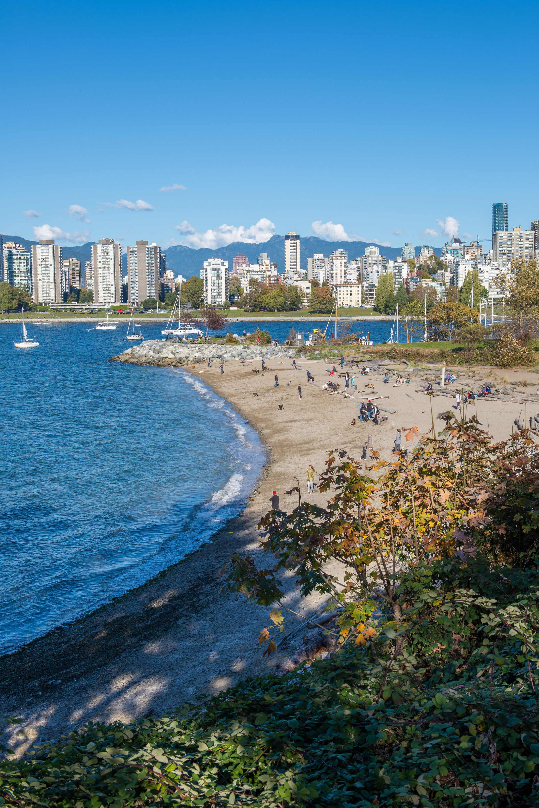
Kitsilano Beach and the downtown skyline.Photo: Thomas K / Pexels
Where to live
Neighbourhood snapshots
Use this to build a shortlist. Then tell me where you will work or study, because the bridge you cross matters more than the neighbourhood’s reputation. Composite benchmarks are Greater Vancouver REALTORS® figures for September 2026.
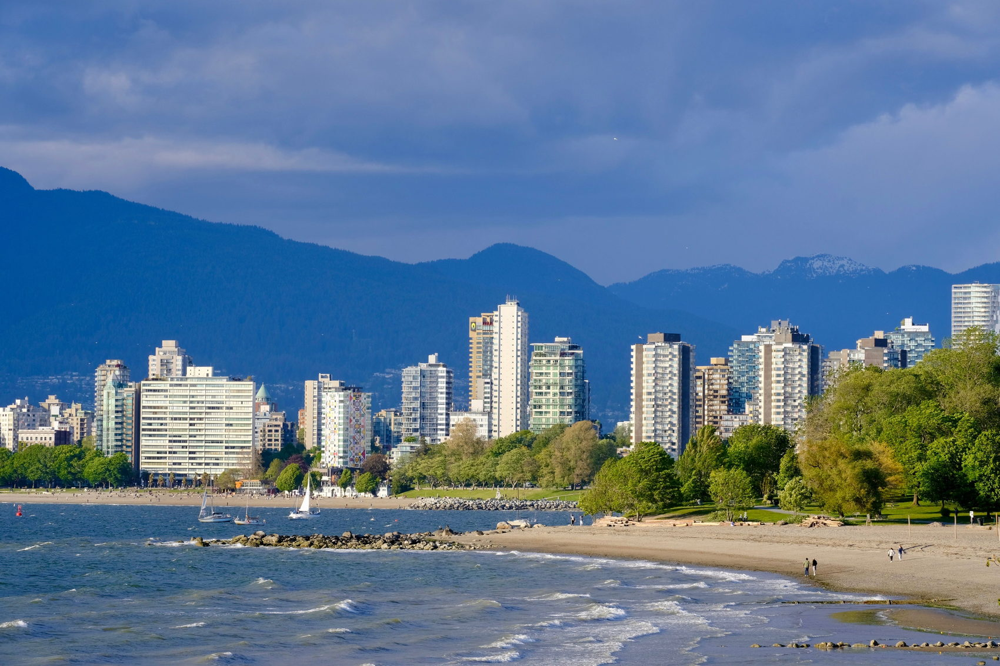
English Bay and the West End. Photo: JP / Pexels
Vancouver
The city proper
Downtown and the West End are towers, seawall, and a short walk to offices. Kitsilano sits on the water further west, near the beach and, beyond that, the university. Mount Pleasant, Fairview and Olympic Village are central and mixed. Commercial Drive and the rest of East Vancouver are lower-rise. GVR does not publish one citywide benchmark: in September 2026 Vancouver East’s composite was $1,120,200 and Vancouver West’s was $1,206,600.
$1,120,200 composite, Vancouver East$1,206,600 composite, Vancouver West
SkyTrain: Expo, Millennium and Canada lines, plus the city’s busiest buses.
Kamui Mintara, Burnaby Mountain. Photo: Red Nguyen / Pexels
Burnaby
Three town centres on SkyTrain
Metrotown (Expo Line), Brentwood (Millennium Line) and Lougheed Town Centre (both lines) are the clusters of newer towers. Houses still cover the slopes between them. GVR splits Burnaby into East, North and South because those markets do not move together.
$982,400 East$877,100 North$972,800 South
Expo and Millennium lines. Lougheed is the last stop before the Tri-Cities.
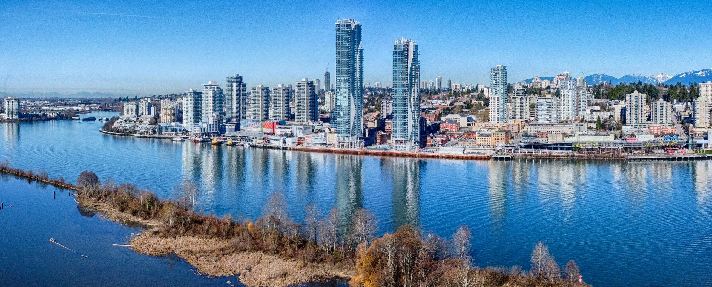
New Westminster from the Fraser. Northwest, CC BY 4.0, via Wikimedia Commons
New Westminster
Compact, and on the Expo Line
A smaller city between Burnaby and Surrey, with a downtown on the Fraser and residential hills above it. September 2026 composite benchmark: $719,600, the lowest of the GVR areas in the benchmark board below. Apartment benchmark: $579,900.
$719,600 composite$579,900 apartment benchmark
Expo Line. Useful if you want SkyTrain without Vancouver’s apartment benchmark.
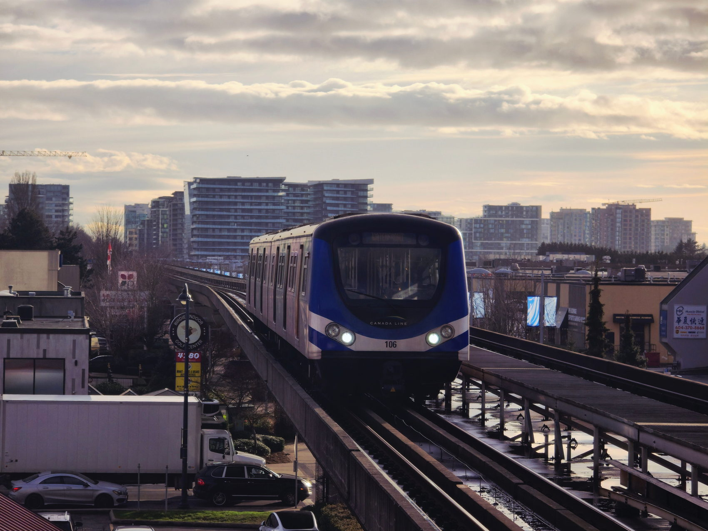
Canada Line, Richmond. Photo: Glen Zi / Pexels
Richmond
Canada Line, and the airport
South of Vancouver, on islands in the Fraser. Many condo communities, a large shopping area, and direct trains to downtown and to YVR. September 2026 apartment benchmark: $635,600. Apartment and condo asking rents in September 2026 averaged $2,572, down 8.4% from a year earlier.
Canada Line. Trips that start at YVR–Airport, Sea Island Centre or Templeton include a $6.50 AddFare.
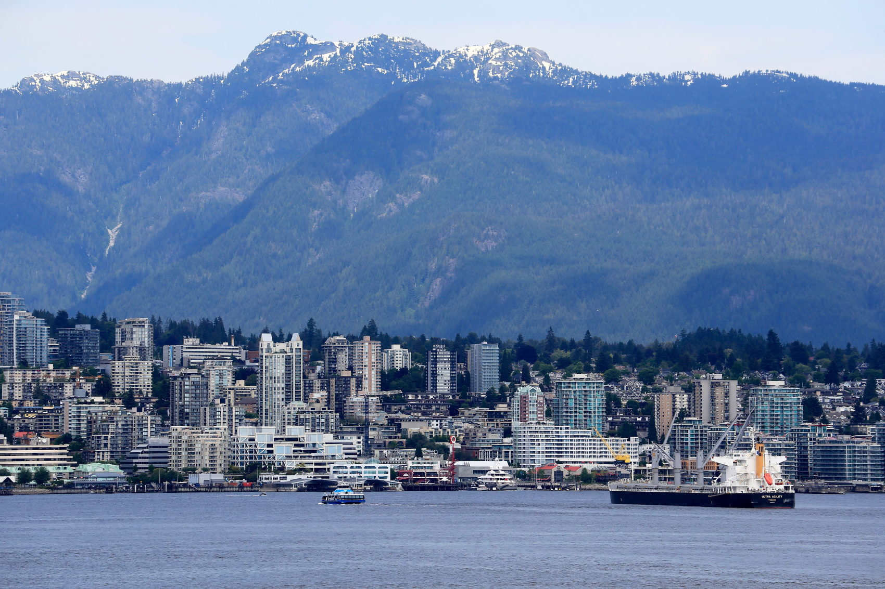
North Vancouver from the water. Photo: Jeffry Surianto / Pexels
North Shore
North Vancouver and West Vancouver
Mountains on one side, Burrard Inlet on the other. The City of North Vancouver and the District of North Vancouver are different municipalities, which is why CMHC reports them separately. September 2026 apartment and condo asking rents in North Vancouver averaged $2,983, which Rentals.ca described as essentially unchanged from a year earlier. West Vancouver is not in the benchmark board below because this guide only quotes rows I verified.
$2,983 asking rent, apts & condos1 or 2 zones SeaBus to Waterfront
Lions Gate Bridge, Ironworkers Memorial Bridge, or the SeaBus from Lonsdale Quay to Waterfront. SeaBus is a 1- or 2-zone fare.
Rocky Point Park, Port Moody. Eviatar Bach, CC BY-SA 3.0, via Wikimedia Commons
Tri-Cities
Coquitlam, Port Coquitlam, Port Moody
This is my home turf: Axford Real Estate is in Port Moody, and I play soccer in Port Coquitlam. SkyTrain’s Millennium Line runs through Coquitlam and Port Moody. Port Coquitlam is on the West Coast Express, not SkyTrain. Anmore and Belcarra are villages just north of Port Moody, with larger lots and a car for most trips. The full local picture is in the Tri-Cities guide.
$971,700 Coquitlam$835,500 Port Coquitlam$1,011,500 Port Moody
Millennium Line (Evergreen Extension) and weekday West Coast Express.
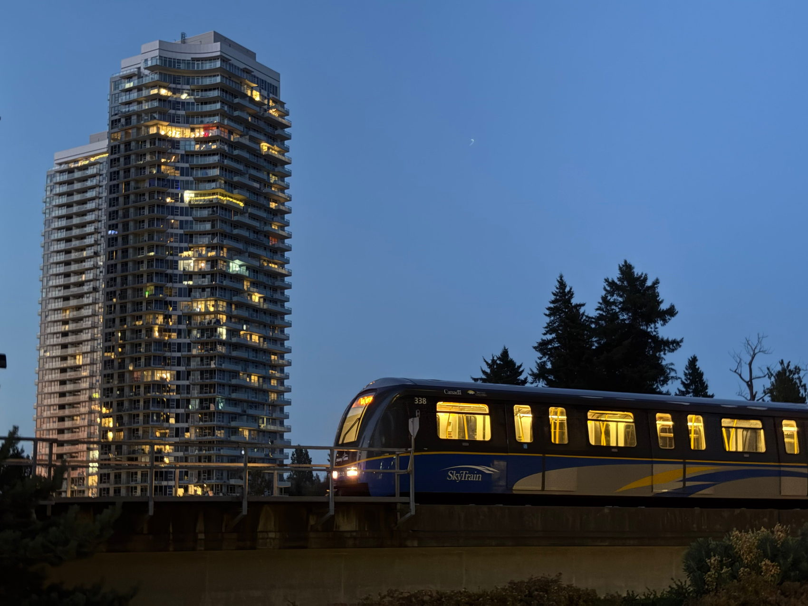
Expo Line, Surrey. Photo: Uzay Yildirim / Pexels
Surrey and Langley
More space, a different board
Surrey is outside Greater Vancouver REALTORS®’ service area. Fraser Valley Real Estate Board’s September 2026 package, for the City of Surrey combined (North Surrey, Central Surrey, Cloverdale and South Surrey, excluding White Rock), shows a detached benchmark of $1,386,200, a townhouse benchmark of $758,600 and an apartment benchmark of $447,600. There is no composite on that line. Langley City and the Township of Langley are separate municipalities in the CMHC rent table.
Expo Line in Surrey. The Surrey–Langley SkyTrain extension is under construction; check TransLink for the opening timeline before you count on a station.
Golden Ears Bridge, over the Fraser. Photo: Jay Ngai / Pexels
Pitt Meadows and Maple Ridge
Further east, on the commuter rail
These cities sit up the Fraser, past the Tri-Cities. I have not quoted a benchmark for them here. What I can say from TransLink’s timetable is that the West Coast Express stops at Pitt Meadows, Maple Meadows and Port Haney on its way between the Tri-Cities and Mission City, weekday rush hour only.
3 West Coast Express stationsR3 RapidBus to Coquitlam Central
West Coast Express, plus the R3 Lougheed Hwy RapidBus between Coquitlam Central and Haney Place in Maple Ridge.
What listings ask · Rentals.ca and Urbanation · September 2026 listings, published 7 October 2026
Asking rents
These are average asking rents on vacant listings for apartments and condominiums, unless noted. They are not the rent a sitting tenant pays. If you are arriving now, this is the number to budget from.
Vancouver · 1-bedroom
$2,380
−4.8% year over year. Studio and 2-bedroom figures were not published for September.
Vancouver · apts & condos
$2,741
+1.4% from August, −1.3% year over year. Lowest September since 2021, and the 34th straight month of annual decline.
B.C. · apts & condos
$2,373
+0.8% from August, −2.3% year over year, −10.7% over three years. All property types in B.C.: −2.9% year over year (CBC, same release).
Canada · all property types
$2,034
−4.2% year over year, the 24th straight month of annual decline. 9.2% below the May 2024 peak of $2,202.
Apartments and condos by city, September 2026 average asking rent
North Vancouver
$2,983“essentially unchanged” year over year
Vancouver
$2,741−1.3% year over year
Richmond
$2,572−8.4% year over year
Burnaby
$2,548year-over-year change not published
Coquitlam
$2,497year-over-year change not published
B.C. average
$2,373−2.3% year over year
Canadaall property types
$2,034−4.2% year over year
Vancouver · 3-bedroom
$3,993
−1.8% year over year.
Vancouver · shared accommodation
$1,163
−8.3% year over year.
Not published
Port Moody, Port Coquitlam, New Westminster, Surrey and Langley were not given their own apartment-and-condo average in the September report. The report also did not publish bedroom-level asking rents for cities other than Vancouver. I am not filling those gaps with a guess.
CMHC average rents, October 2025 — a different number
CMHC’s Rental Market Survey, October 2025, published in the data tables on 11 December 2025, is the latest bedroom-by-city set. It is a weighted average of privately initiated purpose-built rental apartments in buildings with at least three units, occupied and vacant. Occupied units are counted at the rent the tenant pays. That is why these numbers sit below asking rents. Letters are CMHC’s reliability codes: a excellent, b very good, c good, d poor — use with caution. Unmarked figures are code a. A dash means CMHC suppressed the cell.
1 bedroom2 bedroomRight-hand figure: all bedroom types
Vancouver CMAthe whole region
$1,807 1 bed
$2,364 2 bed
$1,970all types · a
Vancouver, City
$1,860 1 bed
$2,638 2 bed
$1,994all types · a
Burnaby
$1,730 1 bed
$2,147 2 bed · b
$1,856all types · a
New Westminster
$1,645 1 bed
$2,134 2 bed
$1,794all types · a
Richmond
$1,676 1 bed
$2,046 2 bed
$1,887all types · a
North Vancouver, City
$1,918 1 bed
$2,444 2 bed
$2,127all types · a
North Vancouver, District
$2,350 1 bed
$2,733 2 bed · b
$2,683all types · b
Coquitlam
$1,692 1 bed · b
$2,148 2 bed · b
$1,909all types · b
Port Coquitlam
$1,634 1 bed · b
$2,095 2 bed · c
$1,918all types · b
Port Moody
— 1 bed suppressed
— 2 bed suppressed
$2,284all types · d
Surrey
$1,602 1 bed
$1,872 2 bed
$1,728all types · a
Langley, City
$1,667 1 bed · b
$2,106 2 bed
$1,909all types · b
Langley, Township
$1,942 1 bed
$2,353 2 bed
$2,185all types · a
Why this is lower
Purpose-built rentals of three or more units, occupied and vacant. A tenant who signed in 2019 is in this average. A listing this month is not. Basement suites and rented condos are outside it.
Port Moody
$2,284code d
Port Moody’s cells are reliability code d. Treat this as a weak estimate, not a budget. For a Tri-Cities apartment you can actually apply for, Coquitlam’s September 2026 asking average of $2,497 is the more relevant number, and even that is an average across very different buildings.
Every bedroom type, all fourteen geographies (CMHC table)
CMHC average rent by bedroom type, October 2025 survey. Purpose-built rentals only. Not September 2026 asking rents. A dash means CMHC suppressed the cell; letters are reliability codes.
Geography
Studio
1 bed
2 bed
3 bed+
All
Vancouver CMA
$1,667 a
$1,807 a
$2,364 a
$2,820 a
$1,970 a
Vancouver, City
$1,706 a
$1,860 a
$2,638 a
$3,291 b
$1,994 a
Burnaby
$1,413 b
$1,730 a
$2,147 b
$2,403 b
$1,856 a
New Westminster
$1,531 a
$1,645 a
$2,134 a
$2,733 b
$1,794 a
Richmond
$1,547 b
$1,676 a
$2,046 a
$2,500 b
$1,887 a
North Vancouver, City
$1,681 a
$1,918 a
$2,444 a
$3,809 b
$2,127 a
North Vancouver, District
—
$2,350 a
$2,733 b
$2,856 b
$2,683 b
Coquitlam
$1,637 b
$1,692 b
$2,148 b
$2,737 b
$1,909 b
Port Coquitlam
—
$1,634 b
$2,095 c
—
$1,918 b
Port Moody
—
—
—
$1,905 d
$2,284 d
Surrey
$1,606 a
$1,602 a
$1,872 a
$1,956 b
$1,728 a
Langley, City
$1,344 c
$1,667 b
$2,106 a
$2,157 b
$1,909 b
Langley, Township
—
$1,942 a
$2,353 a
—
$2,185 a
MLS® Home Price Index · September 2026 · one-year change beside each figure
Benchmark home prices
A benchmark is GVR’s estimate of a typical home in that market, not the price of a particular address. Greater Vancouver REALTORS® published these figures on 2 October 2026. Surrey is from the Fraser Valley Real Estate Board’s 5 October 2026 package, and that package does not publish a Surrey composite. Anmore and Belcarra do not have their own benchmark row.
Greater Vancouver
$1,075,900−5.5%
$1,784,700Detached −7.3%
$1,016,700Townhouse −4.7%
$682,500Apartment −6.2%
Vancouver East
$1,120,200−5.0%
$1,630,500Detached −7.7%
$980,400Townhouse −7.9%
$634,800Apartment −5.2%
Vancouver West
$1,206,600−5.3%
$2,916,100Detached −8.7%
$1,298,500Townhouse −5.5%
$761,800Apartment −5.2%
Burnaby East
$982,400−6.3%
$1,694,900Detached −6.7%
$857,900Townhouse −1.7%
$708,100Apartment −5.5%
Burnaby North
$877,100−7.4%
$1,808,500Detached −9.2%
$880,400Townhouse −4.7%
$662,400Apartment −6.6%
Burnaby South
$972,800−7.2%
$1,894,600Detached −10.3%
$942,100Townhouse −4.9%
$723,000Apartment −8.3%
New Westminster
$719,600−8.2%
$1,356,900Detached −10.4%
$854,200Townhouse −6.8%
$579,900Apartment −7.5%
Richmond
$1,015,800−6.8%
$1,871,100Detached −8.5%
$1,025,000Townhouse −2.3%
$635,600Apartment −9.1%
Coquitlam
$971,700−6.3%
$1,584,400Detached −6.6%
$976,600Townhouse −6.5%
$640,100Apartment −7.3%
Port Coquitlam
$835,500−8.2%
$1,240,600Detached −8.5%
$834,300Townhouse −7.8%
$550,000Apartment −9.0%
Port Moody
$1,011,500−5.8%
$1,903,500Detached −8.4%
$940,900Townhouse −5.2%
$676,200Apartment −4.9%
Surrey, combined · Fraser Valley board
No composite published
$1,386,200Detached −8.3%
$758,600Townhouse −6.6%
$447,600Apartment −10.0%
September 2026 sales, Greater Vancouver REALTORS®
1,717
Sales in September, 8.4% fewer than the 1,875 in September 2025
777
Apartments sold, down 18.6% — the weak segment
575
Detached sold, up 4.2%
358
Attached sold, up 0.6%
10.9%
Sales-to-active-listings ratio, with 16,394 active listings
September’s 1,717 sales were 25% below the 10-year average for the month (2,289). Active listings were 16,394, still 24.3% above the 10-year September average. GVR says prices have tended to face downward pressure when the sales-to-active-listings ratio stays under 12% for a sustained period.
GVR’s news release described the monthly composite decline as 0.6%, while the HPI table shows −0.5%. I am leaving that rounding difference as the source printed it.
TransLink · a diagram I drew, not a TransLink map
How transit works now
TransLink runs SkyTrain, buses, the SeaBus and the West Coast Express. The diagram below is one I drew for this guide. It is a straight-line schematic so you can see which line goes where, in TransLink’s station order. It is not to scale.
Millennium Line, west to east, in TransLink’s names: VCC–Clark, Commercial–Broadway, Renfrew, Rupert (Vancouver); Gilmore, Brentwood Town Centre, Holdom, Sperling–Burnaby Lake, Lake City Way, Production Way–University, Lougheed Town Centre (Burnaby); Burquitlam (Coquitlam), Moody Centre (Port Moody), Inlet Centre (Port Moody), Coquitlam Central (Coquitlam), Lincoln (Coquitlam), Lafarge Lake–Douglas (Coquitlam). The Evergreen Extension is those last six stations. It is the Millennium Line — you do not transfer onto a different train.
Fares and zones, October 2026
There are still three fare zones. TransLink has not replaced them with a distance fare. Every bus and HandyDART trip is 1-zone, all day. SkyTrain is 1, 2 or 3 zones depending on how many boundaries you cross. SeaBus is 1 or 2 zones. After 6:30 p.m. on weekdays, and all day on weekends and statutory holidays, trips across the system are 1-zone.
1 zone · adult
$2.85
Cash, Compass ticket or tap$3.50
Monthly pass$117.20
2 zones · adult
$4.20
Cash, Compass ticket or tap$5.10
Monthly pass$156.70
3 zones · adult
$5.40
Cash, Compass ticket or tap$6.70
Monthly pass$211.65
The big figures are Compass stored value, the cheaper adult fare, as published by TransLink when this was checked. An adult DayPass is $12.55 and is not valid on the West Coast Express. Concession (seniors 65+, youth 13–18, HandyCard) is lower, and the concession monthly pass is $66.95 for all zones. Children 12 and under ride free. A fare is good for 90 minutes on bus, SkyTrain, SeaBus and HandyDART, or 120 minutes if the West Coast Express is part of the trip.
Compass card, the short version
The card itself is a $6 refundable deposit. Buy it at compasscard.ca, by phone at 604-398-2042, at a Compass vending machine in every SkyTrain, SeaBus and West Coast Express station, at the customer service centre in Waterfront Station, or at authorized retailers including some London Drugs stores. Concession cards are not sold at the vending machines.
Load stored value. It is the cheaper adult fare. Add it in increments of at least $5.
A monthly pass is worth comparing if you ride SkyTrain across zones every weekday. It includes unlimited bus travel, and unlimited all-zone travel on evenings after 6:30 p.m., weekends and statutory holidays.
HandyDART is TransLink’s door-to-door service. Its fare matches the 1-zone fare.
West Coast Express, the catch
It is commuter rail between Waterfront and Mission City, eight stations, weekdays only, five trains each way. Mornings run westbound only. Afternoons and evenings run eastbound only. You cannot take it downtown at noon, and you cannot take it home in the morning.
The published weekday timetable, checked 11 October 2026: Mission City departs 5:25, 5:55, 6:25, 6:55 and 7:25 a.m. and those trains arrive Waterfront at 6:40, 7:10, 7:40, 8:10 and 8:40 a.m. Eastbound, Waterfront departs 3:50, 4:20, 4:50, 5:30 and 6:20 p.m. Station parking was listed at $3 a day or $60 a month.
The West Coast Express uses its own zones and prices, up to five zones. A 3-zone SkyTrain pass is not the same product. Moody Centre, Coquitlam Central and Port Coquitlam are 3 West Coast Express zones from Waterfront. A return fare or a West Coast Express monthly pass includes the same day’s bus, SkyTrain and SeaBus. Intermediate minutes for the Tri-Cities stations change when the timetable changes, so read the current one before you plan a school run around it.
Buses you will actually see
The Tri-Cities bus book (effective September 2026) shows local routes radiating from Coquitlam Central, Moody Centre and Port Coquitlam stations. Two that newcomers ask about: the R3 Lougheed Hwy RapidBus, limited-stop between Coquitlam Central and Haney Place in Maple Ridge via Port Coquitlam, and the 182 from Moody Centre Station to Belcarra, which also stops at Anmore Grocery — the bus BC Hydro points to for Buntzen Lake. The 160 runs between Kootenay Loop in Vancouver and Port Coquitlam Station via Moody Centre and Coquitlam Central. I am not quoting a frequency for the 160, because I could not confirm one on an official page.
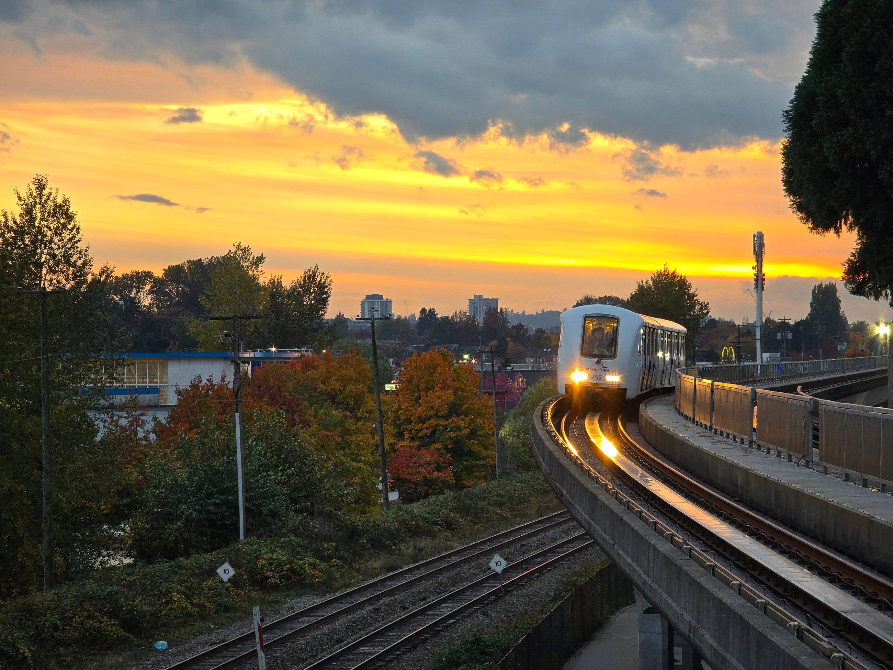
SkyTrain at sunset. Every line is driverless, and the fare zone depends on the time of day.Photo: Glen Zi / Pexels
To downtown, in published minutes
Commute times I can actually cite
TransLink publishes station-to-station SkyTrain times. Millennium Line trains end at VCC–Clark. They do not continue to Waterfront. Downtown is a transfer, usually at Commercial–Broadway onto the Expo Line. These are in-vehicle minutes, added together; they exclude the wait for the second train.
Coquitlam CentralMillennium Line
32 min
Commercial–Broadwaychange to the Expo Line
10 min
Waterfrontdowntown
≈ 42minutes in-vehicle, plus the wait
Lafarge Lake–Douglasend of the Millennium Line
35 min
Commercial–Broadwaychange to the Expo Line
10 min
Waterfrontdowntown
≈ 45minutes in-vehicle, plus the wait
Mission CityWest Coast Express, weekday mornings
75 min
Waterfront5:25 a.m. departure arrives 6:40 a.m.
75minutes on the published timetable
Peak Expo Line frequency is published as 2–5 minutes and peak Millennium Line frequency as 3–4 minutes, so a peak trip is often a few minutes longer than the sum.
Metrotown station on the Expo Line in Burnaby.Northwest, CC BY 4.0, via Wikimedia Commons
Why there is no driving table
Highway 1, the Ironworkers Memorial Bridge, the Lions Gate Bridge, the Port Mann and the Barnet Highway all change with the time of day, and a single “typical” minute count would be false by the following week. Tell me the address and the hour and I will look at that trip, not a regional average.
Errands
Shopping
Downtown, street retail along Robson and the enclosed Pacific Centre sit on the Canada Line and Expo Line. Burnaby’s Metrotown mall is beside the Expo Line station in the photo above. Richmond Centre is on the Canada Line. None of these is “the” mall. People use the one on the way home.
In the Tri-Cities, Coquitlam Centre is a two-level enclosed mall of about 930,000 square feet and nearly 200 stores on Barnet Highway, beside the Lincoln SkyTrain station. Anchors published by the mall include Walmart, Best Buy, London Drugs, Sport Chek, T&T Supermarket, UNIQLO, H&M, Sephora and lululemon. In Port Moody, Suter Brook Village and Newport Village are mixed-use streets of shops under homes, not enclosed malls. Suter Brook’s leasing page lists Thrifty Foods among the tenants. Newport Village is across from Port Moody City Hall and the library. A local favourite at the park, not a mall: Rocky Point Ice Cream, inside Rocky Point Park at 2800 Murray Street, which was still operating when this was checked in October 2026.
Coquitlam Centre, at Lincoln station.Canmenwalker, CC BY 4.0, via Wikimedia Commons
Outside
Parks and hikes
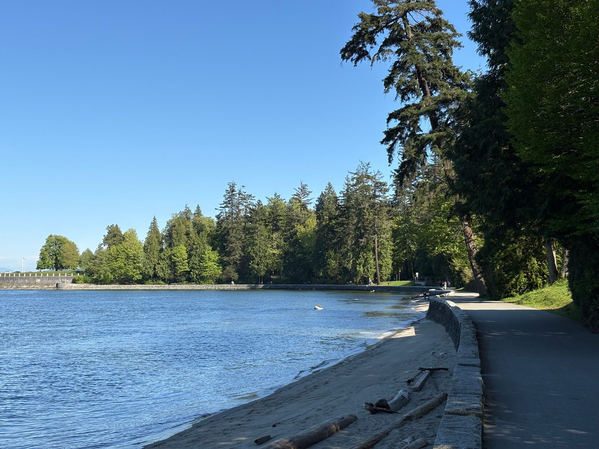
The seawall, Stanley Park.Photo: Uzay Yildirim / PexelsBuntzen Lake, Anmore.Ben Waardenburg, CC0, via Wikimedia CommonsSasamat Lake, Belcarra Regional Park.The Cosmonaut, CC BY-SA 2.5 CA, via Wikimedia Commons
In the city
Stanley Park’s seawall and Kitsilano Beach are the walks people picture when they say Vancouver. Pacific Spirit Regional Park sits between the university and the city. Treat the North Shore mountains as a separate trip: weather and trail conditions change fast, and this guide is not a trail report.
Buntzen Lake
A BC Hydro recreation area in Anmore. Parking is free, but in recent summers, roughly mid-May through early September, you need a free online parking reservation. BC Hydro has released passes in the morning for the next day, and cars without one are turned away. The dates change each year — check bchydro.com/buntzen before you go. There is no public parking in the Village of Anmore. People walking, cycling or arriving on the 182 bus do not need a reservation. The 182 stops at Anmore Grocery, about a 30-minute walk to the South Beach lot.
Belcarra and Admiralty Point
Metro Vancouver’s təmtəmíxʷtən/Belcarra Regional Park has Belcarra beach, Sasamat Lake and the Admiralty Point Trail, which the park brochure lists at about 6 km and 1.5 hours, with rocky shoreline and views of Burrard Inlet. White Pine Beach is the swim beach on Sasamat Lake. On a hot weekend, locals go early.
Tri-Cities parks, in short
Rocky Point Park (2800 Murray Street, Port Moody) is the waterfront park: pier, playground, Shoreline Trail, kayak and paddleboard rentals. Mundy Park in Coquitlam is a 178-hectare urban forest with a 5.5 km loop. Town Centre Park (1299 Pinetree Way) is 42 hectares on Lafarge Lake, beside the end of the SkyTrain. Burke Mountain trails start at Harper Park; the city lists short loops of about 2 km and 3.2 km. Longer routes enter Pinecone Burke Provincial Park, where BC Parks says much of the backcountry hiking infrastructure is in poor condition and signage is incomplete. More detail is in the Tri-Cities guide.
Public schools
Which district you are in
The district follows the address, not the listing’s description. Catchment boundaries move. Confirm with the district’s own locator before you rent or buy for a school. District numbers were confirmed from the B.C. Ministry of Education’s district tables, checked 11 October 2026.
SD39Vancouver
SD41Burnaby
SD40New Westminster
SD38Richmond
SD44North Vancouver
SD36Surrey
SD43Coquitlam — serves Coquitlam, Port Coquitlam, Port Moody, Anmore and Belcarra
School District No. 43 (Coquitlam) describes itself as serving those five communities, with a neighbourhood school assigned from the student’s permanent address. Its School Locator is the tool to use. Secondary schools named on the district’s own 2025–26 contact list, as examples and not as a ranking, include Centennial, Dr. Charles Best, Gleneagle, Heritage Woods, Pinetree, Port Moody Secondary, Riverside and Terry Fox.
MSP and a family doctor
Healthcare
Apply for the Medical Services Plan as soon as you arrive. Do not wait out the wait period. The wait is the rest of the month you become a B.C. resident, plus two more months. Someone who becomes a resident on 16 August is covered from 1 November, which is the example in the Province’s own material. The wait is waived for returning Canadians, permanent residents, and people arriving under the Canada-Ukraine Authorization for Emergency Travel, and for discharged Canadian Armed Forces members and their families. Everyone else should keep private insurance, or coverage from the province they left, until MSP starts. Emergency care is available during the wait. You pay for it unless you are insured.
2 months +
MSP wait for most newcomers: the rest of the arrival month plus two months. Insure the gap.
24/7
Eagle Ridge Hospital, 475 Guildford Way, Port Moody, 604-461-2022: the Tri-Cities community hospital, with emergency, general medicine, rehab and surgery.
Level 1
Royal Columbian Hospital in New Westminster is Fraser Health’s Level 1 trauma centre.
After you enrol, most adults go to an ICBC driver licensing office for a photo BC Services Card. That card is the health card.
To find a family doctor or nurse practitioner, register with the Health Connect Registry. Registration is short. The Province does not estimate how long a match takes, so ignore any specific wait you see in a forum. HealthLink BC is the place for care while you wait.
The Tri-Cities are in Fraser Health. If you are living in Vancouver, your nearest emergency department is not automatically Eagle Ridge or Royal Columbian. Use HealthLink BC once you have an address.
The unglamorous week
Licence, power, gas, internet, rain
ICBC driver’s licence
After you move here you have 90 days to exchange an out-of-province licence. You can drive on a valid existing licence until then. Bring that licence, accepted government ID, and proof of driving experience — the original issue date on the licence, an abstract, or a letter from the issuer. ICBC says it will credit up to 15 years of experience when the abstract qualifies. You surrender the old licence when the B.C. one is issued. Book a driver licensing office. If your home jurisdiction has no exchange agreement, or you cannot prove experience, expect a vision screening and possibly a knowledge test and a road test. I am not quoting an exchange fee, because the pages I checked did not state one. ICBC has also flagged graduated-licensing changes effective 19 October 2026 for some new drivers, so read the current page if that applies to you.
BC Hydro and FortisBC
BC Hydro is electricity. Open a residential account in MyHydro with the address, a phone number, the move-in date, and the landlord’s contact if you are renting. You can start this up to 60 days ahead. A $13.50 + GST new-account charge appears on the first bill, and some accounts also need a security deposit. FortisBC is natural gas in the Tri-Cities and across much of Metro Vancouver, including Coquitlam, Port Coquitlam, Port Moody and Anmore. Not every home has gas. Check the address on FortisBC’s map before you book a connection.
Internet
TELUS PureFibre is built in Coquitlam and is offered in Port Moody, Port Coquitlam and other Lower Mainland cities. Rogers serves British Columbia on the former Shaw network. Novus is in selected buildings, including some in Vancouver, Burnaby, Richmond, Surrey, Coquitlam, New Westminster, North Vancouver and Port Moody — look up the address, because it is building by building. Order before move-in week. I am not quoting prices, and I did not confirm Bell or Oxio for the Tri-Cities.
Weather
Environment and Climate Change Canada’s 1991–2020 normals for Vancouver Harbour: 1,537.4 mm of precipitation a year. November is the wettest month (245.2 mm), then January (236.6 mm). July is the driest (43.5 mm). The daily average temperature runs from 5.3°C in January to 19.0°C in July at that waterfront station. Inland and uphill parts of the Tri-Cities run cooler and see more snow; I do not have a Port Moody or Coquitlam normals table to put a number on that. A waterproof shell and shoes you can walk to SkyTrain in will get more use than an umbrella. The wind on the platform turns an umbrella inside out.
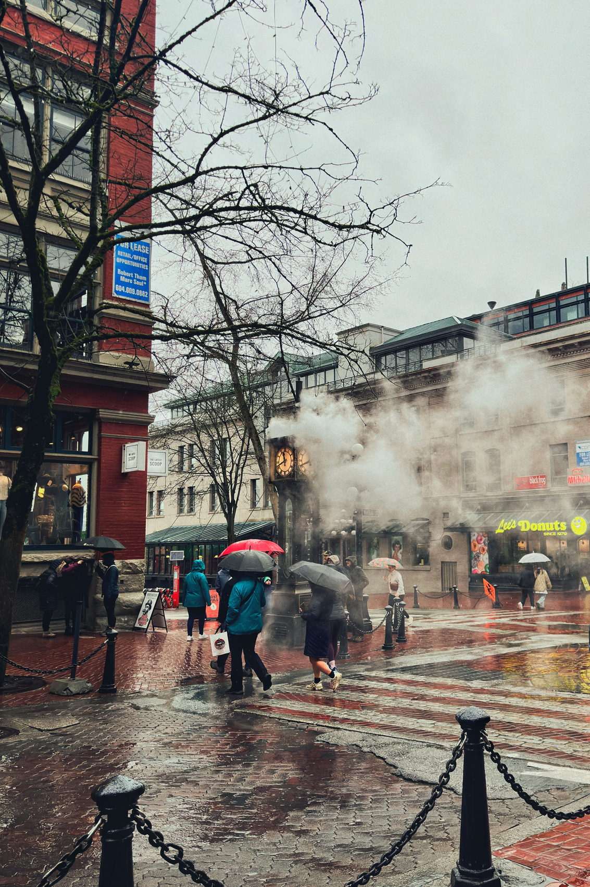
Gastown in the rain.Photo: Kobe / Pexels
Rain · Vancouver Harbour
1,537mm
Precipitation a year, 1991–2020 normals. November is the wettest month at 245 mm; July the driest at 43.5 mm.
January · July
5.3° / 19.0°
Daily average temperatures, 1991–2020, Vancouver Harbour. Higher ground in the Tri-Cities runs cooler.
Deadlines
90 / 60 days
90 days to exchange an out-of-province licence at ICBC. BC Hydro accounts can be opened up to 60 days ahead.
Residential Tenancy Act · checked 11 October 2026
Renting without getting taken
This is the statute, not a suggestion. It is also not legal advice for your particular lease. The Residential Tenancy Branch administers the Act and hears disputes.
½ monthSecurity deposit, at most
Half of one month’s rent. A pet damage deposit, if there is one, is at most another half month, no matter how many pets. Together, that is one month, not “first and last.”
$0Application fee
Application fees are illegal. A landlord must not charge you to accept an application, process it, investigate you, or accept you as a tenant. That includes a “credit-check fee,” even if they promise to refund it.
2.3%2026 rent-increase limit
2.2% is the 2027 limit. Once every 12 months, with three full months’ written notice on the proper form. A landlord cannot round up or bank an unused increase.
7 / 15days · condition inspection, RTB-27
Walk through with the landlord at move-in and move-out and use the Condition Inspection Report. You should receive a copy within 7 days of the move-in inspection and within 15 days of the move-out inspection. This is the document that decides the deposit.
$100Dispute filing fee
The Residential Tenancy Branch’s dispute-resolution filing fee, with waivers for low-income applicants. Phone support is 1-800-665-8779.
4–6weeks before move-in
Most Greater Vancouver rentals are listed only a few weeks before they are available, so the active search usually starts about 4–6 weeks out. Use the time before that to pick areas, a budget and your documents: photo ID, proof of income, and references.
Before you send money
See the home yourself, or on a live video with someone standing in it.
Get the tenancy in writing before you pay a deposit: rent, term, who pays heat and hot water, parking, pets, and how many people will live there. The law already forbids the usual scam hook, which is an application fee or a deposit before any agreement exists. Confirm the person can rent it to you. Be wary of a price far under the asking rents above, of pressure to pay today, and of wire transfers, gift cards or cryptocurrency. Reverse-image the photos. If you are still out of province, this is the problem my tenant search is built for.
If you buy · Province of B.C., page last updated 3 December 2025
Property transfer tax, in plain numbers
Property transfer tax is due when the transfer is registered, on fair market value, unless an exemption applies. The rate steps up through the price; each band is taxed at its own rate.
1%on the first $200,000
2%on the portion above $200,000 up to $2,000,000
3%on the portion above $2,000,000
+2%further, on the residential portion above $3,000,000
Worked examples, not quotes
Coquitlam apartment benchmark
$10,802
Ordinary tax on the September 2026 benchmark of $640,100: 1% of $200,000 ($2,000) plus 2% of $440,100 ($8,802).
Same home, first-time buyer
$2,802
After the $8,000 exemption that applies from just over $500,000 through $835,000, for registrations on or after 1 April 2024 — if every other test is met.
Newly built · Coquitlam townhouse
$17,532
Ordinary tax on $976,600: $2,000 plus 2% of $776,600. A qualifying newly built principal residence can be fully exempt up to $1,100,000, so that is what the exemption is worth.
First-time home buyers’ program
A qualifying purchase of $500,000 or less can be fully exempt. From just over $500,000 through $835,000 the exemption is $8,000. It phases out between $835,000 and $860,000 and is zero at $860,000. I am not inventing the phase-out formula; the Province’s page describes it as proportional.
Qualifying is narrower than “I have never bought in B.C.” You generally need to be a Canadian citizen or permanent resident, meet the residence and tax-filing test, never have held a registered interest in a principal residence anywhere, never have received this exemption, use the home only as your principal residence, and be within the size limit (0.5 hectares for the full amount). Read the current page before you rely on it.
Newly built homes, foreign buyers, GST
There is a separate newly built home exemption. For a qualifying principal residence registered on or after 1 April 2024, fair market value up to $1,100,000 can be fully exempt from ordinary property transfer tax, with a partial exemption up to $1,150,000. The Coquitlam townhouse benchmark of $976,600 is under $1,100,000, so a home at that price could be fully exempt if it is newly built and every other condition is met. The program has applied to qualifying registrations after 16 February 2016. The page I checked states no end date.
Foreign nationals, foreign corporations and taxable trustees can owe an additional 20% on their share of residential property in Metro Vancouver and several other regional districts. There is a list of exemptions, including some confirmed B.C. Provincial Nominees. The additional tax does not apply on Tsawwassen First Nation treaty lands. This is a tax rule, not a comment on who should live here.
GST on a new home is a different tax with its own rebates. I am not walking through those thresholds here. A purchase also has legal fees, an inspection if you include one, and moving costs. None of this is tax advice. The mortgage affordability calculator on my site is an estimate, not an approval.
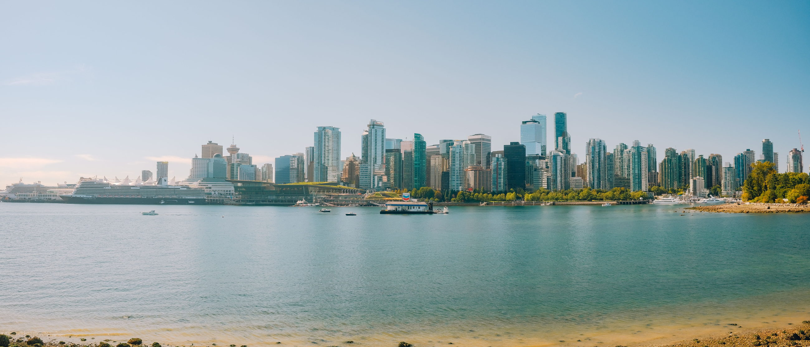
Downtown and the North Shore, from the water.Photo: Brendan Chen / Pexels
Science World and the False Creek seawall.Photo: Yaolong Hu / PexelsA sequence, not a pile
The first 30 days
Before you arrive
Shortlist areas from the commute, not from a photo of the skyline.
Set a rent budget using asking rents, not CMHC’s occupied-stock averages.
Gather ID, proof of income and references. Do not pay an application fee.
If you want a rental search done for you, start the conversation 4–6 weeks out.
Open BC Hydro up to 60 days ahead. Ask whether the home has FortisBC gas.
Order internet for the address. Novus only exists in some buildings.
Week one
Apply for MSP the week you arrive, even though coverage does not start yet. Arrange insurance for the gap.
Do the move-in condition inspection and keep your copy.
Buy a Compass Card, load stored value, and learn whether your commute is 1, 2 or 3 zones before 6:30 p.m.
Register for the Health Connect Registry.
Book the ICBC licence exchange. The 90 days go quickly.
Walk the block in the rain once. That tells you more than a sunny showing.
By day 30
Confirm the school catchment with the district if you have children, using the address you actually signed.
Update your address with your bank, CRA and ICBC.
Find the grocery you will actually use: a supermarket on the way home beats a mall across two bridges.
Learn the city’s garbage and recycling day from the city website. Rules differ by municipality.
If you are still unsure about buying, that is a reasonable place to be. Renting for a while is how a lot of people learn the commute.
Write down what surprised you and send it to me. The next version of this guide should include it.
90 days
Driver’s licence. Exchange an out-of-province licence at ICBC within 90 days.
60 days
BC Hydro. Open the account up to 60 days ahead; the first bill adds $13.50 + GST.
2 months +
MSP wait for most newcomers: the rest of the arrival month plus two months. Insure the gap.
The part listings leave out
Things locals know that newcomers don’t
“The city” is ambiguous
People say “the city” for Vancouver proper and for the whole region. Ask which one they mean before you agree to a commute.
PoCo is not Coquitlam
Port Coquitlam and Coquitlam are different cities with different city halls, different benchmarks, and different stations. PoCo does not have SkyTrain.
The Evergreen Line is not a transfer
You board a Millennium Line train. Burquitlam through Lafarge Lake–Douglas is the east end of that line.
The West Coast Express goes one way
Mornings toward downtown, late afternoon toward Mission. It is not a SkyTrain that happens to be a train.
Evening transit is a different fare
After 6:30 p.m. on weekdays, and all weekend, a long SkyTrain ride is 1-zone. A monthly pass zone is about the weekday daytime trip.
Half a month, not first and last
If someone asks for an application fee or for last month’s rent as a deposit, that is not how B.C. tenancies work.
The rent on a listing and the rent next door
A long-term tenant may be paying something closer to the CMHC figures. You, arriving now, are looking at the asking rents. Both numbers are real. They are not interchangeable.
November, not “a bit of rain”
At Vancouver Harbour, November averages 245 mm. A waterproof layer is ordinary clothing from October into spring.
Buntzen on a sunny Saturday
In summer the parking reservation is the whole plan. Without it you are turning around at the gate.
School catchments are an address
A listing that names a secondary school is not the district’s assignment. Use SD43’s locator, or the equivalent in the city you chose.
MSP does not start on landing day
For most newcomers it is the rest of the arrival month plus two months. Budget private coverage for that gap.
Anmore and Belcarra are not a SkyTrain neighbourhood
They are villages. The trade is space and forest, against a car for most errands. The nearest rapid transit is in Port Moody.
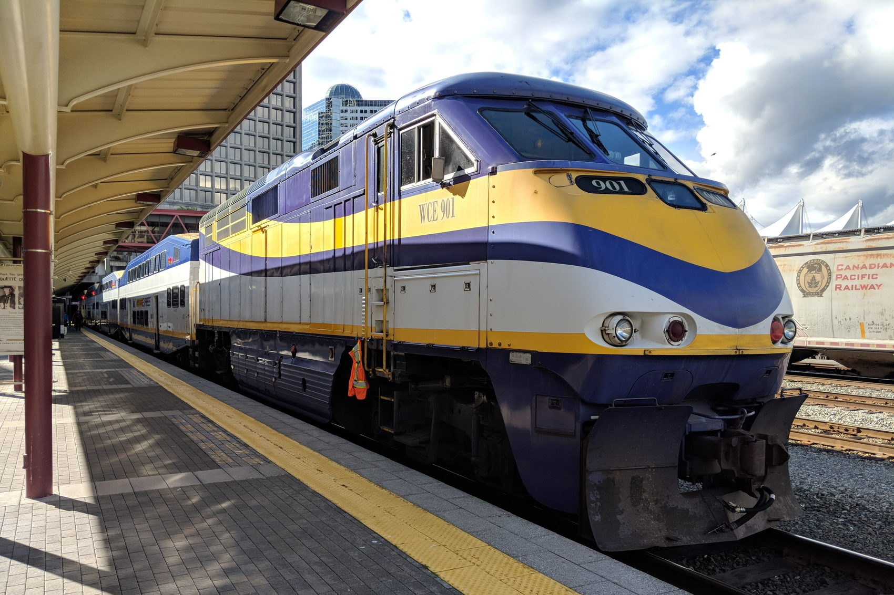
West Coast Express at Waterfront. Weekday rush hour, one direction at a time.Northwest, CC BY-SA 4.0, via Wikimedia Commons
The companion guide
Moving to the Tri-Cities
Coquitlam, Port Coquitlam, Port Moody, Anmore and Belcarra, street by street: the six Evergreen stations, parks, SD43, the Buntzen pass and the city-by-city benchmarks.
I help people moving to Greater Vancouver as a buyer’s agent, and as a tenant-side rental search. The rental service is $1,500 + GST, paid by the tenant: $750 at the start (non-refundable) and $750 when you secure a place. GST is 5%, so the tax on $1,500 is $75 if GST is the only tax on the fee. I search with you, I go to the showings or I walk you through live video, and we read the lease before you sign.
Office: Axford Real Estate, 2326 Clarke St, Port Moody, BC V3H 1Y8. Brokerage 778-355-0116. Direct, call or text, 604-809-1032. devin@axfordrealestate.ca.
Via Pexels (Pexels License): False Creek sunset, Adi K. Kitsilano Beach, Thomas K. English Bay, JP. Burnaby Mountain, Red Nguyen. Canada Line in Richmond, Glen Zi. North Vancouver, Jeffry Surianto. Expo Line in Surrey, Uzay Yildirim. Golden Ears Bridge, Jay Ngai. SkyTrain at sunset, Glen Zi. Stanley Park seawall, Uzay Yildirim. Gastown in the rain, Kobe. Waterfront Station, Kostas Dimopoulos. Downtown from the water, Brendan Chen. Science World, Yaolong Hu. Via Wikimedia Commons: New Westminster and Metrotown station, Northwest, CC BY 4.0. Rocky Point Park, Eviatar Bach, CC BY-SA 3.0. Buntzen Lake, Ben Waardenburg, CC0. Sasamat Lake, The Cosmonaut, CC BY-SA 2.5 CA. Coquitlam Centre atrium, Canmenwalker, CC BY 4.0. West Coast Express, Northwest, CC BY-SA 4.0. Portraits of Devin Desaulniers and the Axford Real Estate logo are brand assets. The transit diagram is original and is not a TransLink map. Full file list: img/ATTRIBUTION.md.
General information from Devin Desaulniers, Real Estate Associate, Axford Real Estate, 2326 Clarke St, Port Moody, BC. It is not legal, tax, financial or mortgage advice, and it is not a promise about any home’s price or rent. Figures were checked on 11 October 2026 and will go out of date. This page is deliberately noindex until it is approved for publication.